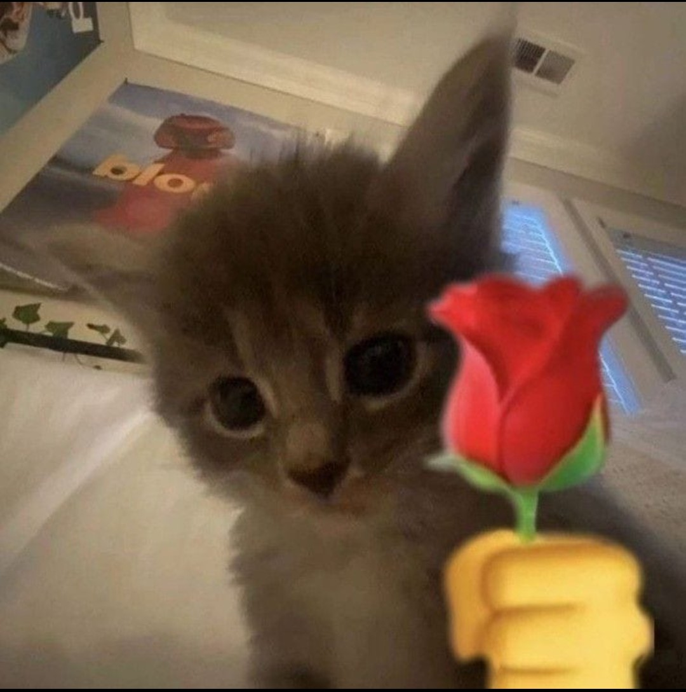

A CONTINUACION, UNOS POEMAS PA USTED:
"En cada latido, tu nombre resuena, encada suspiro, tu amor me llena. Eres mi sol en dias de lluvia, mi refugio en esta vida tan tuya."
"Bajo el cielo estrellado, mi amor por ti es eterno y sagrado. En cada beso se refleja el amor que por ti abrazo."
"En tus ojos encuentro mi destino, en tu sonrisa, el mas hermoso camino. Eres mi luz en la oscuridad, mi refugio en la tempestad."
"En el jardin de mi corazón, florecen las rosas de tu pasión. Cada suspiro es una melodia, que canta el amor que por ti me guía."
"En cada estrella veo tu mirada, en cada sueño, tu risa soñada. Eres el verso que mi corazón recita, la malodia eterna que mi alma invita."
"En le abrazo de tus abrazos me encuentro, en la ternura de tus labios me pierdo. Eres mi anhelo hecho realidad, mi amor por ti, una eterna lealtad."
Eres la mujer mas hermosa y la mas bonita que pude conocer amor, y lo digo encerio, eres muy bonita y muy muy muuuuy hermosa, me encanta tu forma de ser me encanta mucho, lo que mas me gusta de ti es tu sonrisa, me encanta demasiado tu sonrisa, es lo que mas me gusta, tienes una sonrisa muy linda y muy bella, siempre me emociono y me pongo feliz cada que me sonries es lo mejor del mundo, eres la mejor persona que he conocido, no te cambiaria por nada en este mundo mi amor, siempre te tendre conmigo, en mi mente, en mi corazón, y en todo mi ser te llevare mi amor, jamas me olvidare de ti, recuerda que siempre te amare y siempre te querre, eres lo mejor de mi vida y no te quiero perder por nada en este mundo, este ha sido tu regalo mi amor espero que le haya gustado mucho mi amor, te quiero y te amo mucho preciosa. TE AMO LESLY. ATT: Josue (Tu novio)
